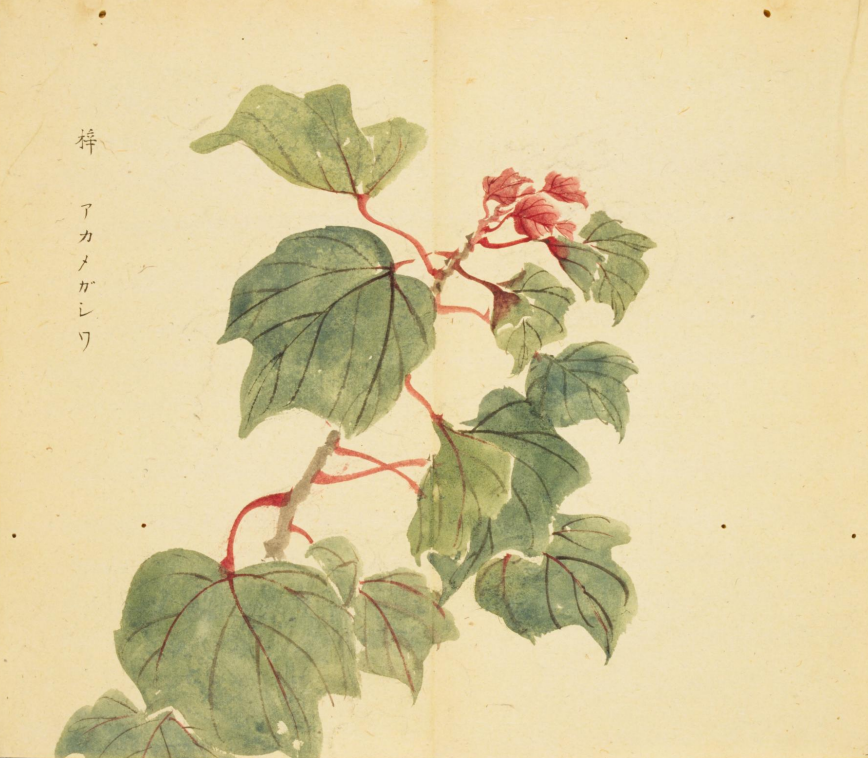
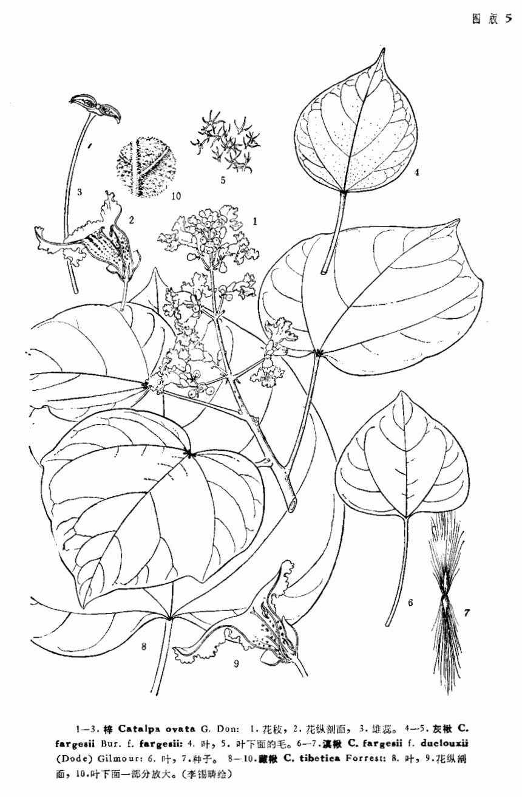

出现篇目
古代记载
《毛诗草木鸟兽虫鱼疏》
梓者，楸之疏理，白色而生子者为梓，梓实桐皮曰椅，今人云梧桐也，则大类同而小别也。
《诗集传》
梓、楸之疎理。 白色而生子者。（《诗集传》集注《定之方中》）
《本草纲目》
《别录》曰∶梓白皮生河内山谷。
弘景曰∶此即梓树之皮。梓有三种，当用朴素不腐者。
颂曰∶今近道皆有之，宫寺人家园亭亦多植之。木似桐而叶小，花紫。《尔雅》云∶椅，梓。郭璞注云∶即楸也。《诗．鄘风》云∶椅、桐、梓、漆，爰伐琴瑟。陆机注云∶楸之疏理白色而生子者为梓，梓实桐皮为椅，大同而小异也。入药当用有子者。又一种鼠梓，一名楰，亦楸属也。枝叶木理皆如楸。今人谓之苦楸，江东人谓之虎梓。《诗．小雅》云“北山有楰”是也。鼠李一名鼠梓，或云即此。然花实都不相类，恐别一物而名同尔。
藏器曰：楸生山谷间，与梓树本同末异，或以为一物者误矣。
大明曰：梓有数种，惟楸梓皮入药佳，余皆不堪。
机曰：按尔雅翼云，椅，梓也；梓，楸也。槚亦楸也。然则椅、梓、槚、楸，一物四名。而陆机《诗疏》以楸之疏理白色生子者为梓，梓实桐皮者为椅。贾思勰《齐民要术》又以白色有角者为梓，即角楸也，又名子楸。黄色无子者为椅楸，又名荆黄楸。但以子之有无为别。其角细长如箸，其长近尺，冬后叶落而角犹在树。其实亦名豫章。
时珍曰∶梓木处处有之。有三种∶木理白者为梓，赤者为楸，梓之美纹者为椅，楸之。诸家疏注，殊欠分明。桐亦名椅，与此不同。此椅即尸子所“谓荆有长松、文椅”者也。
当代记载 《中国植物志》
梓（Catalpa ovata G. Don），紫葳科梓属植物。乔木，高达15米；树冠伞形，主干通直，嫩枝具稀疏柔毛。种子长椭圆形，长6-8毫米，宽约3毫米，两端具有平展的长毛。产长江流域及以北地区；日本也有。多栽培于村庄附近及公路两旁，野生者已不可见，海拔（500）1900-2500米。

<细井徇>

<中国植物志>